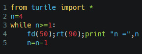
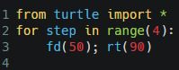
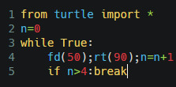
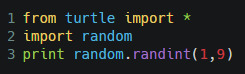
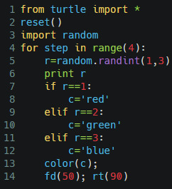

Introduction to Python
In this semester we would start learning Python for handling Physics Problems. In our labs, we begin our interaction with python by drawing simple figures using its built-in turtle module. You do not need to install anything to begin learning Python: just visit this web-site to follow on.
If you have correctly landed on this site, you would find something like the follwing figure:
{kind=link}
In this website you would type code in the left panel. After writing the code, press the green run button and graphics output would appear in the top right graphics window, and command outputs will appear in the bottom right console. Before running a new piece of code
- Erase the earlier code segment,
- type the new one and,
- press the green button again.
Iteration
Computers never tire (at least they have not complained, so far, but have been known to burn out due to excessive game playing) about repeating something they have been instructed to. A repetition becomes an iteration when it improves or builds up something over the initial iterates
Let us start our day by drawing a square on the screen. Type the following piece of code (do not copy-paste anything as long we do not tell you to) and click on the green run button at the top of the graphics window.

src
Assignment: Ensure that you have typed, executed and obtained the same results as outlined in the text ; this is absolutely essential. Then attempt Assignment 1 (look under this node for numbered assignments)
To draw a square, the turtle has to repeat four times the following actions:
- advance by 50 steps
- turn right (no advancement)

src
From eight lines of action to 2 lines; quite an improvement. There is another way to do it using a while loop
Assignment: Assignment 2

src
This time, the value of n would get printed in the shell window as each line gets drawn on the graphics window.
The while loop can be written in another way in which the test condition is checked at the end; it is similar to the do ... while loop in other languages:

src
Assignment: Assignment 3
Choice
A computer program would executes one line after another starting from the top and grinding its way to the bottom unless it is hit with a decision statement. At a decision point, code branches into one of the possible directions depending on the current state of the program. But before running into a choice, let us first learn a little bit about how to generate random integers in python:

src
Assignment: Assignment 4
Run the above code over and over again by repeatedly clicking the green button (you do not have to clear code for this example; just keep running the same code over and over again). As you run the program, each time a new random number in the (inclusive) range [1,9] appears in the output (like 2,1,3,3,6,1,3,9...). We would now use the random number to draw a colored square, where the sides of the box would be colored by a randomly chosen number such that 1 ↦ red, 2 ↦ green, 3 ↦ blue.

src
Run this programme a couple of times and verify that every time a new box is generated. The reset function called in the first line is a turtle function. It ensures that the turtle forgets its last state and will execute the following commands over a clean slate.
Assignment: Assignment 5